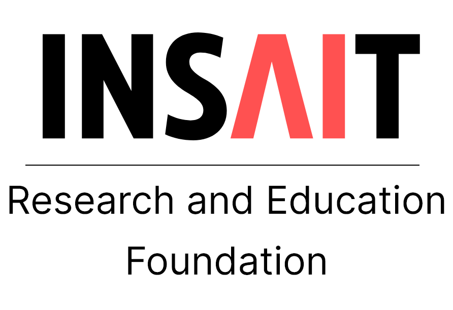

École polytechnique fédérale de Lausanne (EPFL)
M.Sc. in Computer Science, AI and Data Science Specialization (Sep. 2025 – Expected Jul. 2027)
GPA: 5.85/6

I am an M.Sc. student in Computer Science at EPFL, specializing in AI and Data Science. My research asks how agents can learn useful world models and act on them. It spans generative video world models, reinforcement learning and robot learning.
At INSAIT, with Prof. Luc Van Gool and Prof. Danda Paudel, I built GenieRedux, an open-source implementation of DeepMind's Genie. We then trained it on data collected by RL agents instead of human demonstrations. This led to papers at NeurIPS 2025, CVPR 2025 and a NeurIPS 2024 workshop. Since February 2026, I have been a research intern with Prof. Glen Berseth at Mila, working on causal world models that tell apart what the agent causes from what the environment does on its own. Since August 2026, I have also worked with Prof. Aude Billard at EPFL's LASA lab on constraint learning that transfers across different robots. I hold a B.Sc. in Computer Engineering from Sharif University of Technology, with a minor in Applied Mathematics.
I am looking for research internships for 2027.
École polytechnique fédérale de Lausanne (EPFL)
M.Sc. in Computer Science, AI and Data Science Specialization (Sep. 2025 – Expected Jul. 2027)
GPA: 5.85/6
Sharif University of Technology
B.Sc. in Computer Engineering, Minor in Applied Mathematical Science (2020 – 2025)
Overall GPA: 19.17/20, Major GPA: 19.75/20
Cross-Embodiment Constraint Learning in Robotics
EPFL – Learning Algorithms and Systems Laboratory (LASA), Lausanne, Switzerland (Aug. 2026 – Present)
Supervised by Prof. Aude Billard
Developing a constraint learning framework that separates environment constraints (such as obstacles) from each robot's own kinematic and dynamic limits, using demonstrations from different robots. The goal is zero-shot transfer of constraints to new robot bodies, in simulation and on real Franka Emika and KUKA arms.
Causal World Models for Reinforcement Learning
Mila – Quebec AI Institute, Montréal, Canada (Feb. 2026 – Present)
Supervised by Prof. Glen Berseth
Building causal world models that separate what the agent causes from what the environment does on its own, in procedurally generated RL environments. In Craftax, using event-aware world models, I built a counterfactual pipeline that branches the model's imagined rollouts under action interventions and checks them against the exact simulator outcomes. I am now using it to train attribution heads that assign each event to the agent or the environment, which targets the credit assignment problem.

Interactive Video Generation and World Models
INSAIT, Sofia, Bulgaria (Mar. 2024 – Aug. 2025)
Supervised by Prof. Luc Van Gool & Prof. Danda Paudel

Multi-Objective Optimization Evolutionary Algorithms
Max Planck Institute for Informatics, Saarbrücken, Germany (Jul. 2023 – Sep. 2023)
Supervised by Prof. Vahid Babaei
Improved solution diversity in multi-objective optimization (NSGA-II, NSGA-III and related algorithms) with a Monte Carlo method that randomly segments the objective space and applies custom sorting.
Teaching Assistant, EPFL
School of Computer and Communication Sciences (Feb. 2026 – Present)
Head Teaching Assistant & Teaching Assistant, Sharif University of Technology
Department of Computer Engineering (Sep. 2021 – Jun. 2024)
Selected Courses
Online Courses
Programming
Python, C/C++, CUDA, Java, Scala, R
ML & Data
PyTorch, JAX, TensorFlow, scikit-learn, Spark, CVXPY
Robotics & Tools
Franka Emika, KUKA IIWA, ROS 2, Isaac Sim, MuJoCo, Linux, Git, Docker, Slurm, W&B
Languages
Persian (Native), English (IELTS 8.0)
Running
I run regularly. It is how I clear my head between experiments.
Calisthenics
I train calisthenics, building strength and skills with bodyweight training.